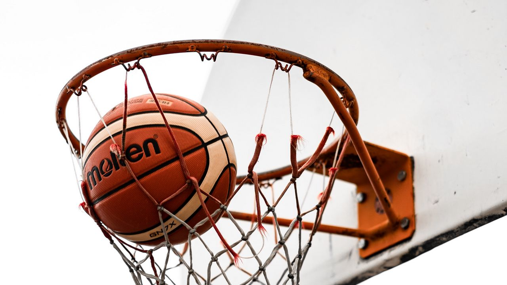
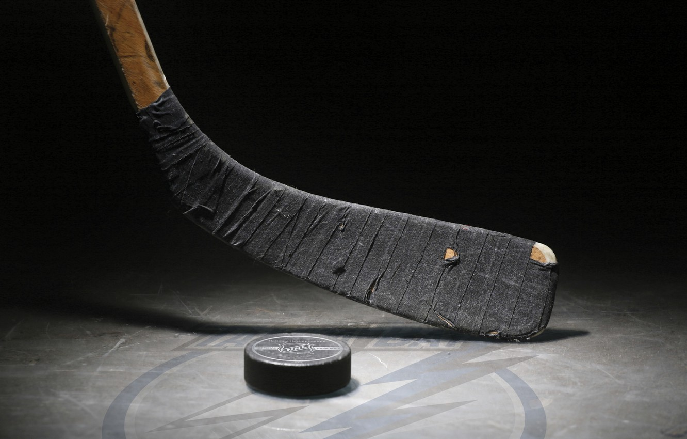

Футбол

Есть 17 официальных правил игры, каждое из которых содержит список оговорок и руководящих принципов. Эти правила предназначены для применения на всех уровнях футбола, хотя есть некоторые изменения для таких групп, как юниоры, взрослые, женщины и люди с ограниченными физическими возможностями. Законы очень часто формулировались в общих чертах, которые позволяют упростить их применения в зависимости от характера игры. Правила игры публикуются в ФИФА, но поддерживаются Международным советом футбольных ассоциаций (IFAB)[36]. Каждая команда состоит максимум из одиннадцати игроков (без учёта запасных), один из которых должен быть вратарём. Правила неофициальных соревнований могут уменьшить количество игроков, максимум до 7. Вратари являются единственными игроками, которым позволено играть руками при условии: они делают это в пределах штрафной площади у своих собственных ворот. Хотя есть различные позиции на поле, эти позиции не обязательны[37]. Отдельная футбольная игра называется матч, который в свою очередь состоит из двух таймов по 45 минут. Пауза между первым и вторым таймами составляет 15 минут, в течение которой команды отдыхают, а по её окончании меняются воротами[38]. Цель игры — забить мяч в ворота противника, сделать это как можно большее количество раз и постараться не допустить гола в свои ворота. Матч выигрывает команда, забившая большее количество голов. В случае, если в течение двух таймов команды забили одинаковое количество голов (ничья), то или фиксируется ничья, или победитель выявляется согласно установленному регламенту матча. В этом случае может быть назначено дополнительное время — ещё два тайма по 15 минут каждый. Как правило, между основным и дополнительным временем матча командам предоставляется перерыв. Между дополнительными таймами командам даётся лишь время на смену сторон. Одно время в футболе существовало правило, по которому победителем объявлялась команда, первой забившая гол (правило «золотого гола») или выигрывавшая по окончании любого из дополнительных таймов (правило «серебряного гола»). В настоящий момент дополнительное время либо не играется вовсе, либо играется в полном объёме (2 тайма по 15 минут). Если в течение дополнительного времени победителя выявить не удаётся, проводится серия послематчевых пенальти, не являющихся частью матча: по воротам противника с расстояния 11 метров пробивается по пять ударов разными игроками. Если количество забитых пенальти у обеих команд будет равным, тогда пробиваются по одной паре пенальти, пока не будет выявлен победитель[39].
Баскетбол
Изначально правила игры в баскетбол были сформулированы американцем Джеймсом Нейсмитом и состояли лишь из 13 пунктов. Со временем баскетбол изменялся, изменений потребовали и правила. Первые международные правила игры были приняты в 1932 году на первом конгрессе ФИБА, после этого они многократно корректировались и изменялись, последние значительные изменения были внесены в 1998 и 2004 годах. С 2004 года правила игры остаются неизменными. Правила игры несколько отличаются в НБА и чемпионатах, проводимых под эгидой ФИБА (чемпионаты мира, Олимпийские игры, чемпионаты континентов, международные и национальные первенства европейских клубов). В баскетбол играют две команды, обычно по десять человек, от каждой из которых на площадке одновременно присутствует пять игроков. Цель каждой команды в баскетболе — забросить мяч в корзину соперника и помешать другой команде овладеть мячом и забросить его в корзину своей команды. Мячом играют только руками. Бежать с мячом, не ударяя им в пол, преднамеренно бить по нему ногой, блокировать любой частью ноги или бить по нему кулаком является нарушением. Случайное же соприкосновение или касание мяча стопой или ногой не является нарушением. Победителем в баскетболе становится команда, которая по окончании игрового времени набрала большее количество очков. При равном счёте по окончании основного времени матча назначается овертайм (обычно пять минут дополнительного времени), в случае, если и по его окончании счёт будет равен, назначается второй, третий овертайм и т. д., до тех пор, пока не будет выявлен победитель матча. За одно попадание мяча в кольцо может быть засчитано разное количество очков: 1 очко — штрафной бросок 2 очка — бросок со средней или близкой дистанции (ближе трёхочковой линии) 3 очка — бросок из-за трёхочковой линии на расстоянии 6 м 75 см (7 м 24 см в Национальной баскетбольной ассоциации) (Трёхочковый бросок был включен в официальные правила игры (ФИБА) в 1984 году)[4]. Игра официально начинается спорным броском в центральном круге, когда мяч правильно отбит одним из спорящих. Матч состоит из четырёх четвертей, длительность каждой 10 минут (двенадцать минут в Национальной баскетбольной ассоциации) с перерывами по две минуты. Продолжительность перерыва между второй и третьей четвертями игры — пятнадцать минут. После большого перерыва команды должны поменяться корзинами. Игра может идти на открытой площадке и в зале высотой не менее 7 м. Размер поля — 28×15 м. Размер щита 180×105 см. От нижнего края щита до пола или грунта должно быть 290 см. Корзина представляет собой металлическое кольцо, обтянутое сеткой (без дна).
Хоккей
Правила игры в хоккей не раз менялись, – причем весьма существенно. Так, в 19 в. иным было количество игроков на площадке (9ґ9, затем – 7ґ7), команды обходились без запасных игроков, а в их составе были хоккеисты с необычным по современным меркам амплуа: например, так называемый ровер (англ. rover) – нападающий, имевший право играть только у ворот соперника. По-иному вводилась в игру шайба. Судья клал ее на лед, разводил, держа руками, клюшки соперников и, подав соответствующую команду, отскакивал в сторону. Лишь со временем шайбу стали вбрасывать.Долгое время применение силовых приемов допускалось исключительно в зоне защиты, – только в 1970 разрешили силовую борьбу по всему полю. Три года спустя перестали фиксировать проброс шайбы, если первым ее коснется игрок атакующей команды. Одно из самых кардинальных изменений произошло в 2001: было отменено так называемое «правило красной линии», по которому игрок не мог принимать шайбу за средней линией, если она была послана из зоны защиты. Подобные новшества вносятся в правила для того, чтобы сделать игру более динамичной, острой и зрелищной.Матч по хоккею с шайбой состоит из трех периодов по 20 минут чистого времени. Перерывы между периодами длятся 15 минут. В случае ничейного результата по окончании трех периодов возможно назначение дополнительного времени (овертайма). В случае ничьей по окончании овертайма пробиваются штрафные броски (буллиты). Необходимость овертайма, а также его продолжительность, необходимость и количество штрафных бросков оговариваются отдельно в регламенте турнира.На матч обычно приходят 20—25 игроков от одной команды. Минимальное и максимальное количество игроков определяется регламентом турнира. Одновременно на поле со стороны одной команды должны находиться шесть игроков: пять полевых и один вратарь.Допускается замена вратаря на шестого полевого игрока. Смены игроков возможны как в паузах во время остановки времени игры, так и непосредственно в ходе игры. Во время проведения овертаймов на площадке присутствует по пять игроков (вратарь и четыре полевых).